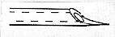

CHAPTER 5 - CELLULAR METHODS
(Source: R. Ho)
Successful cell transplantation in zebrafish embryos requires a steady hand, a calm spirit, and a knowledge of embryonic anatomy. In addition, concern for the continued good health of the embryos and addition of penicillin and streptomycin to all media are necessary.
Unless one plans to perform transplantation of cells within an individual embryo, separate groups of donor embryos and host embryos are needed. Ordinarily, one should label one of the groups of embryos (usually the donors) so that after transplantation, the transplanted cells can be distinguished from host cells. We have had great success with the family of highly fluorescent dextran compounds, in particular, rhodaminated-dextran, although fluoresceinated-dextran also works. Donor embryos are labeled with glass micropipettes. A pipette is filled with the dye solution and attached to an apparatus that forces the dye out of the pipette with air pressure. The tip of the pipette is then gently broken off, generally by touching it to a pre-shaped glass rod, and inserted into the yolk cell of a donor embryo immersed in embryo medium in a depression slide. A small amount of dye is then expelled into the yolk before withdrawing the pipette. Dye injected before the third cleavage division will be distributed throughout the blastoderm via the cytoplasmic bridges between cells within the embryo. See Blastomere Lineage Analysis, for more detailed methods.
The technique of transplanting cells has taken us many years to perfect and involves the use of specialized transplantation pipettes formed from glass capillaries. Considerable "hands on" skill is required for production of the transplantation pipette. The capillaries are pulled to fine tips on a Flaming-Brown electrode puller. The tips are either broken off at an angle using a hand-held razor blade or beveled with a commercial beveler and then fire polished with a micro-forge. Frequently, a sharp 'spear-tip' is tooled onto the end of the pipette by briefly touching the pipette to the hot wire of the microforge and drawing out the molten glass into a shape resembling that shown in . This sharp spear-tip is useful for penetrating the outer epithelium of the embryo. A smooth and symmetrical pipette tip is required for successful transplantation. Ideally, the inner diameter should equal the diameter of the transplanted cells. For this reason, pre-formed transplantation pipettes with various diameters should be prepared.

Spear-tip
During cell transplantation, arrange the labeled donor embryos and unlabeled host embryos on a depression slide in 3% methyl cellulose or 1.2% agar dissolved in 10% modified Hank's medium and cover with just enough medium to keep them wet. Fill the transplantation pipette with mineral oil and attach it to an oil-filled Hamilton syringe with polyethylene tubing. Mount the transplantation pipette onto a micro-manipulator and position within the labeled donor embryo. Draw cells into the pipette with suction from the Hamilton syringe. Withdraw the pipette, now containing labeled donor cells, and insert it into the unlabeled host embryo and expel the transplanted cells. Carefully withdraw the pipette from the host embryo and maintain this embryo with standard procedures.
The Zebrafish Book